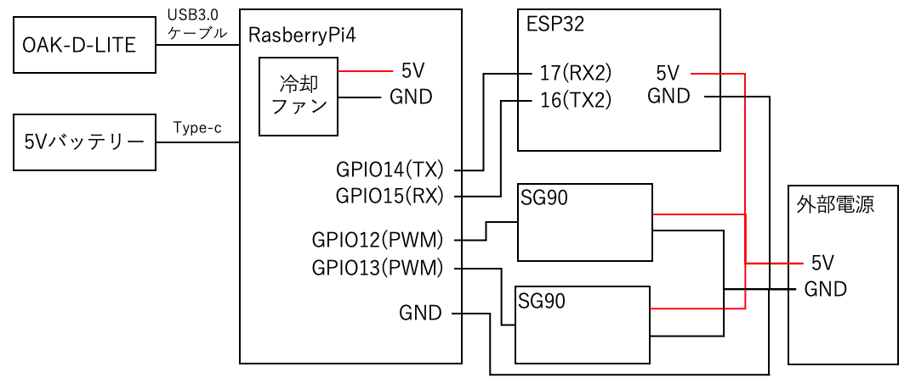

DETAILS
頭部分に主に使用したもの
・RasberryPi4 modelB 8GB
・ESP32
・OAK-D-LITE
・SG90サーボモーター×2
・ASRock H2R (HDMI 2-in-1 ルーター)
・単三電池×4/電池ボックス/5Vモバイルバッテリー
システム・回路(頭部分)
回路図
システム概要図
- 

PIカメラとOAK-D-Liteの比較
-

-
PIカメラ フレームレート
→約3.3FPS
実際のラグ
→約2.4s -

-
OAK-D-LITE フレームレート
→約18.3FPS
実際のラグ
→約0.7s


フローチャート全体図

実際にデモで行った動き
・スマホ・パソコンから操作

・顔追従


・ハンドジェスチャー操作

指差し指示 指差し指示（正面から) 

ピース追従 あっち向いてホイ 

更なる進化を遂げるための課題
1.コミュニケーションのバリエーションを増やす
改善方法:
1.指先の軌道を記憶し頭部分が再現するなど自動操作のハンドジェスチャー操作を追加する。
2.頭と体を合体し,体の動作もコミュニケーションの要素として追加する。
3.ロール軸を増やし、不明なジェスチャーを認識したときに頭を傾げるなど頭の自由度を増やす。
2.プログラムが不完全で,かわいい要素を損なう要素がある
改善方法:
1.現在、同様のジェスチャー認識をし続けた時にサーボ制御をしており、その時間的な調整をより試行錯誤する必要がある。
2.「ゆるやかな動作」が「かわいい」につながると考えられるため、ぎこちなさを感じさせず、より滑らかにサーボを動かす必要がある。
3.顔追従の際に追従より先に顔がフレームアウトした際にも、適切に追従を続けるようにするなどプログラムの改善余地がある。
4.サーボモーターの動作音が気になったので、ロボット自体から音(声)を出し、紛らわせる、または、より静かに動作するサーボを選定やハード的に音を遮断できるように工夫する。
2.頭部をカメラをにするのをやめる
長期的に動かすと仮定し、足制御の負担(重心の移動)を考えると頭をカメラにするの ことは最善策ではないと感じた。また,あっち向いてホイが指差されたジェスチャーを見る必要 があるため後出しになってしまっている.
改善方法:
カメラを胴体に移動する。この場合、顔自体がカメラになっていないので、現在の追従方法が使用できなく顔追従の際には計算で角度を求めることが必要不可欠となる。
3.カメラを胴体に移動し計算で角度を頭を移動するために問題がある
現在はプログラムのループ上にサーボを組み込んでおり、サーボ制御時にはカメラのフレーム取得が止まってしまう。よって、数式で求めた角度でサーボを制御しても、滑らかかつ、早く追従することができないだろう。
改善方法:
この問題を解決するには、ESP側でサーボを動かす制御する必要がある。そのために、サーボ2つの角度の数値をラズパイからESP32に送る必要があるため、ESP32にLANモジュールをつけ、ラズパイとUDP通信し、2つの数値を送り続け、現在の角度を受け取った数値に向けて少しずつ移動するなど通信方法を見直す必要があるだろう。
4.このwebサイトの改善
動作を表示したいあまり、gifを多用しているためwebページの読み込みが遅い。コンテンツが少ない。
改善方法:
1.web上に掲載するのは画像にとどめ、動画は1つにまとめる。
2.コンセプトムービーや使用手順、PHPを使ってwebページ上で動的に投票を収集するシステムを作成する。